00 Индекс
Эта страница - ответы на вопросы к экзамену по ОП.02 "Электротехника и электроника"
Примеры решения некоторых задачПримеры решений из лекции 12(метод контурных токов, узловых напряжений, расчёта электрических цепей).
1-10
01 Электрическое поле. Свойства электрического поля.
Электрическое поле(э.п.) это особая форма материи, которое создаётся электрическими зарядами, т.е. заряженными телами и которую можно обнаружить по взаимодействию электрических зарядов.
Свойства э.п.:- Оно материально т.е. существует независимо от нас и наших знаниях о нём.
- Оно создаётся эл. зарядами.
- Оно обнаруживается по взаимодействию электрических зарядов.
- Оно действует на э.з. с некоторой силой.
- Э.п. непосредственно невидимо, но может наблюдаться по его действию и с помощью приборов.
- Э.п. является 1 из составляющих единого электромагнитного поля с проявлением электромагнитного воздействия.
- Для количественного определения э.п. вводится силовая характеристика, напряжённость э.п. называется физическую величину = отношению силы с которой поле действует на + пробный заряд помещённый в данную точку пространства к величине этого заряда, напр. э.п. – это векторная физическая величина, направление вектора совпадает в каждой точке пространство с направлением силы действующей на + пробный заряд.
Вектор Е = вектор F / q. - Энергетическое характеристикой поля является потенциал. Физическую величину = отношению потенциальной энергии электрического заряда в электростатическом поле к величине этого заряда называют потенциалом э.п.
φ=Wg/g. В международной системе СИ: 1ВТ=1Дж/К
02 Закон Кулона.
Закон Кулона количественно описывает взаимодействие заряженных тел, он является фундаментальным законом, т.е. установлен при помощи эксперимента и не следует не из кого другого закона природы, он сформулирован для не подвижных точечных зарядов в вакууме в реальности точечности зарядов не существует, но таким можно считать заряды, размеры которых значительно меньше зарядов между ними.
Электрический заряд это физическая величина характеризующая св-во частиц или тел вступать электромагнитные силовые взаимодействия, впервые закон взаимодействия неподвижных зарядов был открыт французским физиком Кулоном в 1785г. В опытах Кулона измерялось взаимодействие между шариками размеры, которых много меньше расстояния между ними, такие заряженные тела принято называть тотечными зарядами на основании многочисленных опытов Кулон установил следующий закон: сила взаимодействия 2 неподвижных точечных электрических зарядов в вакууме прямопропорционально произведению их модулей и обратнопропорционально квадрата расстояния между ними. F=k=((q1)*(q2))/r2
(q1),(q2) - модули зарядов;r - расстояние между зарядами;
k – коэффициент пропорциональности;
k=1/4пEo следовательно F=(q1)*(q2)/4ПEor2
Eo – электрическая постоянная = -8,85*10-12
K=9*109
Из этого всего можно сделать следующие выводы:
- Существует 2 рода электрических зарядов условно называемых + и -.
- Заряды могут передоваться от 1 тела к другому в отличие от т тела электрич. Зар. Не является не отъемлимой данного тела, т.е. одно и тоже тело в разных условиях может иметь разный разряд.
- Одноимённые заряды отталкиваются, разноимённые притягиваются взаимодействия неподвижных электрических зарядов называют электрическим или Кулоновским взаимодействием, закон Кулона справедлив для точечных заряженных тел, чтобы выполнялся закон Кулона 3 условия:
- Точечность зарядов;
- Неподвижность зарядов;
- Взаимодействие зарядов в вакууме.
Кулон заряд проходящий за 1 секунду через поперечное сечение проводника при силе тока 1 Ампер.
03 Электростатическое поле.
Электрические поля, которые создаются неподвижным электрическими зарядами называются электростатическими.
04 Электрическое напряжение.
Под электрическим напряжением понимают работу, совершаемую электрическим полем для перемещения заряда, напряженностью в 1 Кл. из одной точки проводника в другую. Все вещества состоят из атомов, представляющих собой положительно-заряженное ядро вокруг которого с большой скоростью кружатся более мелкие отрицательные электроны. В общем случае атомы нейтральны, так как количество электронов совпадает с числом протонов в ядре. Если некоторое количество электронов отнять из атомов, то они будут стремиться притянуть такое же их количество, формируя вокруг себя плюсовое поле. Если же добавить электронов, то возникает их избыток и отрицательное поле, формируются положительные и отрицательные потенциалы. При их взаимодействии возникает взаимное притяжение, чем больше будет величина различия (т.е. разность потенциалов), тем сильнее будет электрическое поле и его напряжение.
U - напряжение, единица измерения [1В] (1 вольт)1 Вольт выражается в разности потенциалов двух точек электрического поля, силы которого совершают работу в 1 Дж. Для перемещения заряда в 1 Кл. из одной точки в другую.
U=A/q, где A - работа; q - заряд;Напряжение измеряется прибором - вольтметром.
0506 Проводники в электрическом поле.
В экзаменационных вопросах ошибка. Один и тот же билет написан дважды.Проводники свободно пропускают через себя электрозаряды, поскольку содержат в себе заряженные свободные носители. Классические проводники представлены различными видами металлов и электролитами. Когда проводник попадает в электрическое поле, в нем возникает движение свободных зарядов. Оно прекращается при нулевом значении напряженности. Разноименные заряды могут разделяться и тогда наблюдается явление электростатической индукции. В этом случае прекращается перемещение свободных зарядов вдоль поверхности проводника. Когда распределение достигает определенного значения, вектор напряженности в поле становится перпендикулярным проводнику. Все эти свойства проводников, на которые воздействует поле используются на практике в различных приборах и устройствах.
07 Полупроводники в электрическом поле.
Полупроводник - тело или материал, в к.т. электрические заряды начинают перемещаться под двействием внешних факторов, таких как тепло, свет и др.
Полупроводник проводит электрический ток, но не так как металлы, а при соблюдении определенных условий – сообщении веществу энергии в нужных количествах. Это связано с тем, что свободных носителей зарядов слишком мало или их вовсе нет, но если приложить какое-то количество энергии – они появятся.
08 Электроемкость. Конденсатор.
Электроёмкостью системы из 2х проводников наз. физ.величина, определяемая как отношения заряда q одного из проводников к разности потенциалов между ними:
C = q/∆φ [Ф] - фарад.Величина C зависит от формы и размеров проводников и от свойств диэлектрика, разделяющего проводники.
Существуют такие конфигурации проводников, при к.т. электрическое поле оказывается сосредоточенным лишь в некоторой области пространства.
Конденсатор это система, состоящая из двух или более проводников. Обозначается буквой C.
Плоский конденсатор две параллельные металлические пластины (обкладки), между которыми находится диэлектрик.
09 Последовательное и параллельное соединение конденсаторов.
Изображение взято из источника: fizmat.by
Для достижения нужной ёмкости или при напряжении, превышающем номинальное, конденсаторы могут соединяться последовательно или параллельно.
При последовательном соединении конденсаторы подключают таким образом, что только первый и последний конденсатор подключен к источнику тока одной из своих пластин. Заряд одинаков на всех пластинах.
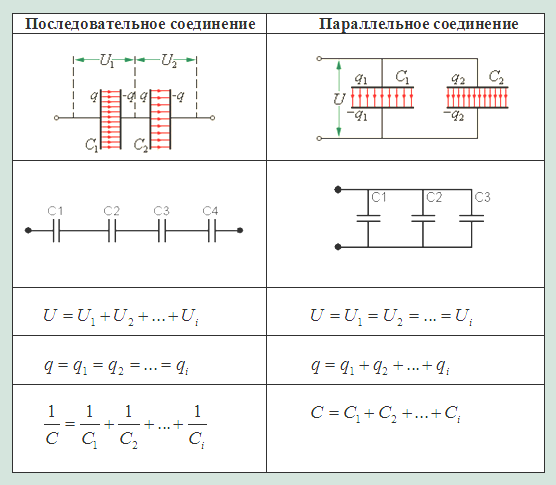10 Электрический ток в проводниках.
Электрическим током называется упорядочное движение заряженных частиц в процесс которого происходит перенос электрического заряда. В металическом проводнике такими частицами является свободные электроны. Они находятся в постоянном тепловом движении. Если в проводнике появится электрическое поле, то носители зарядов будут учавствовать не только в тепловом, но и в упорядочном тепловом движении
11-20
11 Сила тока.
Количественной мерой электрического тока является сила тока I - это скалярная физическая величина, численно равная заряду, переносимому через рассматриваемую поверхность за единицу времени I = q/t
Электрический ток может быть постоянным или переменным
Постоянный ток это эл.ток, величина и напряжение которого не меняется с течением времени.
Переменный ток(~I) это эл.ток, величина и напряжение которого меняется с течением времени.
Единица силы тока является I = 1 [А]
I=q/t, где q - заряд, t - время.
1А - это такая сила, проходящая по двум прямолинейным параллельным бесконечно длинным тонким проводникам расположенным в вакууме на расстоянии 1м друг от друга при которой данные проводники взаимодействуют с силой 0,2мн в расчёте на 1м длины каждого проводника. Данная сила взаимодействия имеет магнитную природа.
12 Электрическая цепь.
Электрическая цепь это совокупность устройств, элементов, предназначенных для протекания тока и электромагнитных процессов, к.т. могут быть описаны с помощью понятий сила тока I и напряжения V.
Изображение электрической цепи с помощью условных знаков, наз. электросхемой.
Электрические цепи подразделяются на разветвлённые и неразветвлённые.
В неразветвлённой цепи во всех её элементах течёт один и тот же ток.
Простейшие разветвлёенная цепь имеет три ветви и два узла, в каждой ветви течёт свой ток.
Ветвь — это участок электрической цепи (схемы), по которому течет один и тот же ток.
Узел — соединение трех и более ветвей. На электрической схеме узел обозначается точкой.
Узел, в к.т. сходятся две ветви, одна из которых является продолжением другой, называют устранённым или вырожденным.
Элементы электрических цепей.Активными элементами являются источники электрической энергии.
Активной цепью называют цепь, содержащую хотя бы один источник электроэнергии.
К активным цепям относятся также цепи с транзисторами и электрическими лампами, т.к. в их схемы замещается вх. источники электрической энергии.
Пассивные элементы не являются источниками электрической энергии. Пассивные элементы делятся на диссипативные и реактивные.
Пассивная цепь - цепь, не содержащая источник электроэнергии. В такой цепи есть только диссипативные и реактивные элементы.
Реактивные элементы - элементы, способные накапливать электроэнергию и отдавать её либо источнику, от которого эта энергия была получена, либо другому элементу. Пример реактивного элемента - это катушка индуктивности и конденсатор.
Реактивной цепью называется цепь, содержащая только реактивные элементы. В них нет диссипативных элементов, а реактивные элементы считюатся идеальными.
Диссипативные элементы - элементы, осуществляющие диссипацию (dissipatiоn – рассеивание) электрической энергии. Элементы с такими свойствами осуществляют преобразование электрической энергии в тепловую. Такими элементами являются резисторы. Они характеризуются электрическим сопротивлением, которое измеряется в омах (Ом).
Диссипативная цепь - цепь, содержащая хотя бы один диссипативный элемент.
В действительности все электрические цепи диссопативны.
Линейной электрической цепью называют цепь, содержащую только элементы с линейной вольт-амперной характеристикой.
Нелинейной электрической цепью называют цепь, содержащую хотя бы один элемент с нелинейной вольт-амперной характеристикой.
Контур - замкнутая часть электрической цепи.
Перемычки - электрический проводник с нулевым сопротивлением, подсоединённый своими концами к различным двум точкам схемы.
13 Электродвижущая сила (ЭДС).
Электродвижущая сила в устройстве, осуществляющем принудительное разделение "+" и "-" зарядов величина численно = ∆φ между зажимами генератора при отсутствии тока в его цепи, измеряется в Вольтах.
Обозн. E - скалярная величина, характеризующая способность стороннего поля и индуктированного электрического поля вызывать электрический ток.
ЭДС численно = работе, затрачиваемой этим полем на перемещение единицы заряда из одной точки в другую.
Перемещение единицы заряда из одной точки в другую сопровождается затратой энергии.
[E] = 1Дж/1кл = 1В.14 Электрическое сопротивление.
Электрическое сопротивление это физическая величина, характеризующая способность проводника препятствовать прохождению по нему электрического тока.
Обозн. R(r) - 1 Ом.В зависимости от среды проводника и носителей зарядов физическая природа сопротивления может отличаться.
R = ρ*l/S, где ρ - удельное сопротивление вещества проводника[Ом*м], l - длина проводника[м], S - площадь сечения[мм2].Удельное сопротивление скалярная физическая величина, численно равная сопротивлению однородного цилиндрического проводника единичной длины и единочной площади.
15 Соединение резисторов.
I. Последовательное: последовательное соединение характерно тем, что через все элементы протекает ток одинаковой силы и состоит из 2х резисторов R1 и R2, то ток протекающий через них и любую другую часть цепи будет одинакого. Суммарное считается как сумма всех её элементов.
Rобщ = R1 + R2 + R3+...+ Rn.
II. Параллельное: входы некоторых деталей соединение в одной точке, тоже так же в одну точку соед. их выходы.
Общее сопротивление:
Rобщ = R1 + R2 + R3+...+ Rn.
Сопротивление для 2х резисторов:
Rобщ= R1*R2/R1+R2
III. Смешанное: является комбинацией последовательного и параллельного соединения.
Общее сопротивление при смешанном соединении резисторов определяют согласно алгоритму:
- Определяют эквивалентное сопротивление участков с параллельным соединением резисторов.
- Если эти участки содержат последовательно соединенные резисторы, то сначала вычисляют их сопротивление.
- После расчета эквивалентных сопротивлений резисторов перерисовывают схему. Обычно получается цепь из последовательно соединенных эквивалентных сопротивлений.
- Рассчитывают сопротивления полученной схемы.
16 Закон Ома.
Открыт в результате экспериментов Георга Ома с гальванометром и простой электрической цепью из источника ЭДС и сопротивления.
Для широкого класса проводников при неизменной температуре справедлив закон Ома для участка цепи:
Сила тока I прямопропорциональна приложенному напряжению U и обратно пропорциональна сопротивлению проводника.
I = U/R; I = I*R; R = U/I.
Закон Ома для полной цепи:
Любой источник тока обладаем своим сопротивлением, которое называется внутренним сопротивлением источника. Таким образом, источник тока имеет 2 важные характеристики: ЭДС и внутреннее сопротивление.

Пусть ист. тока ЭДС E и внутреннее сопротивление r подключены к резистору R, к.т. в данном случае называется внешним резистором или внешней нагрузкой. Всё вместе это называется полной цепью.
Закон Ома для полной цепи устанавливает зависимость силы тока I в замкнутой цепи от ЭДС источника и полного сопротивления цепи:
I = E/R+rСила тока I в замкнутой цепи измеряется тношением ЭДС источника тока, имеющегося в этойцепи к полному её сопротивлению.
17 Законы Кирхгофа.
В сложных электрических цепях, т.е. где имеется несколько разнообразных ответвлений и несколько источников ЭДС имеет место и сложное распределение токов, однако при известных величинах всех ЖДС и сопротивлении резистивных элементов цепи, мы можем вычислить значение этих токов и их направление в любом контуре цепи с помощью первого и второго закона Кирхгофа.
I закон имеет две формулировки: 1)Сумма всех токов, втекающих в узел = сумме всех токов вытекающих из узла.
2)
Алгебраическая сумма всех токов в узле = 0
I1 = I2 + I3;
I1 - I2 - I3 = 0.
"+" - втекающий ток;
"-" - вытекающий ток.
II закон Кирхгофа
Алгебраическая сумма ЭДС действующих в замкнутом контуре = алгебраической сумме падений напряжений на всех резистивных элементах в этом контуре
Величина ЭДС и величина падений напряжений на этих элементах может быть как со знаком "+", так и со знаком "-".
18 Энергия и мощность в электрической цепи.
В источнике электрическая энергия также, как и в нагрузке происходит необратимое преобразование электрической энергии в тепло.
Работа совершаемая источником электрической энергии за время Т, то есть работа по разделению зарядов сторонними силами.
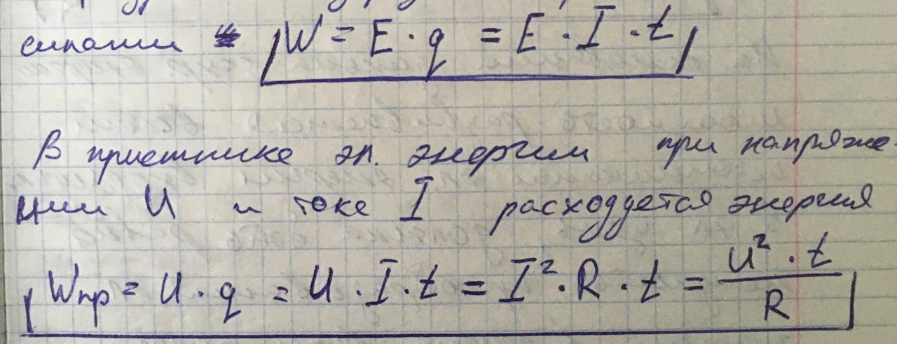Мощность характеризует интенсивность преобразования энергии из одного вида в другую, за единицу времени.
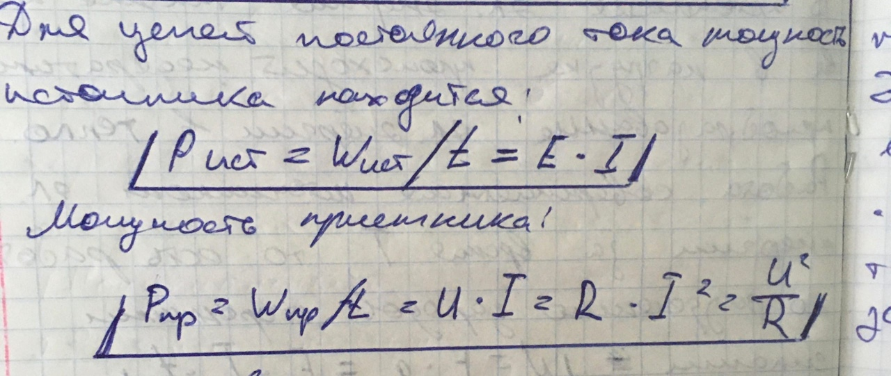19 Баланс мощности.
На основании закона сохранения энергии модность развиваемая всеми источниками электрической энергии входящими в электрическую цепь, должна быть равна мощности преобразования электрической энергии в другие виды энергии всеми приемниками входящими в эту цепь.
Уравнение баланса мощности для цепей постоянного тока
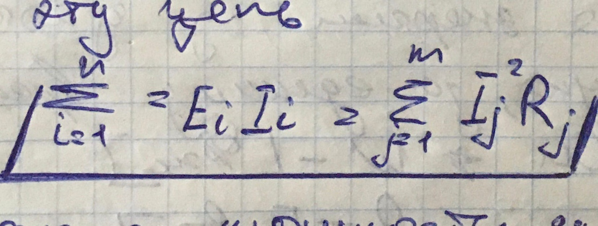20 Режимы работы электрических цепей.
Режим электрической цепи это совокупность режимов работы отдельных элементов. Среди бесчисленного множества режимов наиболее характерными являются следующие режимы работы электротехнических устройств:
- Номинальный;
- Рабочий режим;
- Режим холостого хода;
- Режим короткого замыкания;
- Согласованный режим.
21-30
21 Метод контурных токов.
Это - изменённый вид лекции с внесёнными мною и Дашей Малыгиной корректировками(суть осталась та же). Прошу обратить внимание на ссылку с примером внизу.Метод контурных токов — один из нескольких методов сокращения размерности системы уравнений, описывающей электрическую цепь.
Суть метода заключается в том, что вместо токов в ветвях электрической цепи определяются так называемые контурные токи при помощи второго закона Кирхгофа. Таким образом, количество требуемых уравнений будет равняться числу независимых контуров.
Алгоритм расчёта таков:
1) Выделяют независимые контуры;2) Контурам присваивают произвольно направленный контурный ток, который имеет одинаковое направление для всех участков выбранного контура;
3) В результате выбора контурных токов можно составить систему уравнений по второму закону Кирхгофа. Если токи получаются отрицательными, значит действительное направление противоположно принятому.
Пример из лекции
22 Метод узловых напряжений.
Кроме метода контурных токов, для уменьшения трудоемкости расчётов, применяют метод узловых напряжений, при этом возможно еще меньшее число уравнений, так как при этом методе их число достигает
p = q -1,где q - количество узлов в электрической цепи.
Принцип расчёта электрической цепи заключается в следующем: 1. Принимаем один из узлов цепи за базисный и присваиваем ему φ = 0 ;
2. Для оставшихся узлов составляем уравнения по 1 закону Кирхгофа, заменяя токи в ветвях по закону Ома через напряжение и сопротивление;
3. После решения получившейся системы уравнений вычисляем токи в ветвях по обобщенному закону Ома.
Пример из лекции
23 Классификация магнитных цепей.
Магнитная цепь это совокупность ферромагнитных и неферромагнитных частей электротехнических устройств, необходимых для создания магнитных полей нужных конфигураций и интенсивности.
Магнитные цепи могут быть неразветвленные, в которых магнитный поток в любом сечении цепи одинаков, и разветвленные, в которых магнитные потоки в различных сечениях цепи различны.
Разветвленные магнитные цепи могут быть сложной конфигурации, например в электрических двигателях, генераторах и других устройствах.
Неразветвленные магнитные цепи бывают однородные и неоднородные.

24 Закон магнитных цепей.
Основные законы магнитной цепи. Аналитические выражения взяты с сайта studfile.net
Закон непрерыности магнитного потока.

Формулировка:
Поток вектора магнитной индукции через замкнутую поверхность равен нулю
Закон полного тока

Формулировка:
Циркуляция вектора напряженности вдоль произвольного контура равна алгебраической сумме токов, охватываемых этим контуром
25 Электромагнитная индукция.
Электромагнитная индукция явление возникновения тока в замкнутом проводящем контуре при изменении магнитного потока, пронизывающего его.
Это явление было открыто М.Фарадеем 29 августа 1831 г.
26 Закон электромагнитной индукции Фарадея.
ЭДС индукции в замкнутом контуре равна и противоположна по знаку скорости изменения магнитного потока через поверхность, ограниченную контуром:
εi = Δφ/Δt.Знак «–» в формуле позволяет учесть направление индукционного тока. Индукционный ток в замкнутом контуре имеет всегда такое направление, чтобы магнитный поток поля, созданного этим током сквозь поверхность, ограниченную контуром, уменьшал бы те изменения поля, которые вызвали появление индукционного тока.
Если контур состоит из N витков, то ЭДС индукции:
εi = -N(Δφ/Δt).Сила индукционного тока в замкнутом проводящем контуре с сопротивлением R:
I = εi/RПри движении проводника длиной l со скоростью v в постоянном однородном магнитном поле с индукцией B-> ЭДС электромагнитной индукции равна:
εi = B * v * I * sin a, где a - угол между векторами B и v.27 Правило Ленца.
Направление индукционного тока определяется по правилу Ленца:
Индукционный ток, возбуждаемый в замкнутом контуре при изменении магнитного потока, всегда направлен так, что создаваемое им магнитное поле препятствует изменению магнитного потока, вызывающего индукционный ток.
Правило Ленца имеет глубокий физический смысл – оно выражает закон сохранения энергии.
28 Взаимодействие проводников с током.
Если по проводникам текут токи одного направления, то проводники притягиваются.
Если по проводникам текут токи противоположенных направлений, то прводники отталкиваются.
29 Правило левой руки.
Правило левой руки: если левую руку расположить так, чтобы составляющая вектора В перпендикулярная скорость заряда входило в ладонь , а 4 вытянутых пальца были направлены по движению положительного заряда( = против движения отрицательного заряда), то отогнутый на 90 градусов палец будет показывать направление действующей заряд сил Лоренца
В случае, если прямолинейный проводник расположен параллельно вдоль направления линий магнитного поля, поле не действует.
Этой формулой можно пользоваться:
· если длина проводника такая, что индукция во всех точках проводника может считаться одинаковой;
· если магнитное поле однородное (тогда длина проводника может быть любой, но при этом проводник целиком должен находиться в поле).
30 Самоиндукция и Взаимоиндукция.
Самоиндукция.Самоиндукция — это явление возникновения ЭДС индукции в проводящем контуре при изменении протекающего через контур тока.
Так как индуктированная ЭДС направлена против причины, ее вызвавший, а этой причиной будет ЭДС источника, то ЭДС самоиндукции будет направлен против ЭДС источника
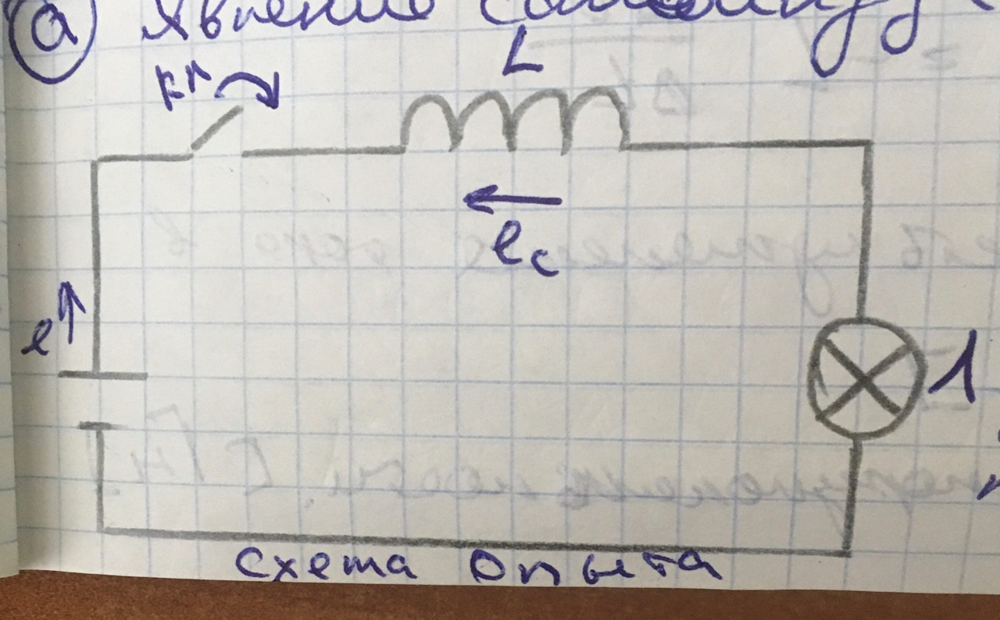 Взаимоиндукция.Если под одной из двух магнитносвязанных катушек пропустить переменный ток, то на концах обмотки второй катушки появится электродвижущая сила. Это и называется взаимоиндукцией.
31-40
31 Вихревые токи.
Вихревыми токами (также токами Фуко) называются электрические токи, возникающие вследствие электромагнитной индукции в проводящей среде (обычно в металле) при изменении пронизывающего ее магнитного потока. Вихревые токи порождают свои собственные магнитные потоки, которые, по правилу Ленца, противодействуют магнитному потоку катушки и ослабляют его. Кроме того, они вызывают нагрев сердечника, что является бесполезной тратой энергии.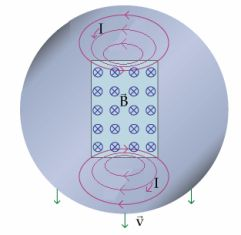
32 Синусоидальный электрический ток.
Переменный ток в отличии от тока постоянного, непрерывно изменяется как по величине, так и по направлению, причём изменения эти происходят переодически, то есть точно повторяются через равные промежутки времени.
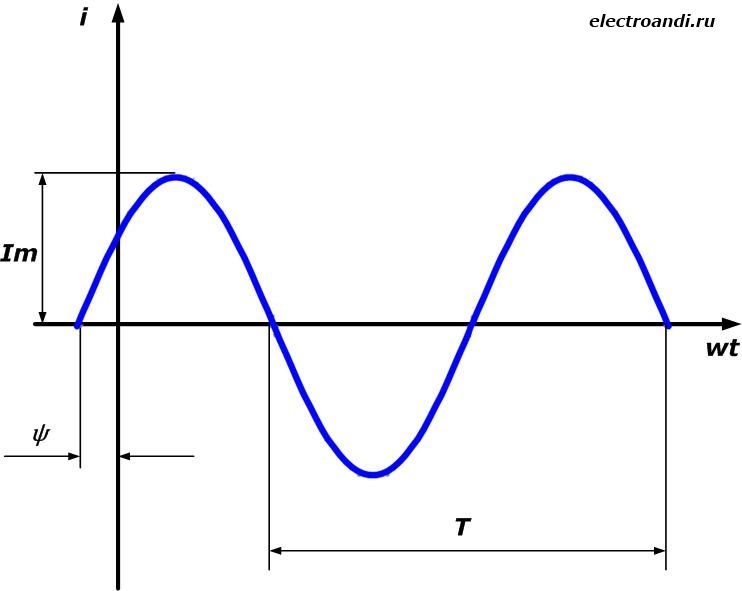
i, u, e - мгновенные значения(сила тока, напряжения, ЭДС);
Im, Um, Em - амплитудные значения переменных величин;
Амплитудные значения - max значения переменных
ω - угловая частота, угол поворота за время t; ω = l/t, где l - угол поворота.
T - период, время одного оборота
f - частота - количество полных колебаний за 1с = 1/T[Гц]
Стандартная частота тока = 50 Гц, значит стандартый T = 0,02 с., ω = 314(рад/с).
(ωt + ψ ) - фаза - угол поворота переменной величины.
ψ - начальная фаза - угол в момент времени t = 0.
33 Основные параметры и характеристики цепей переменного тока.
Переменный ток характеризуется периодом, амплитудой и частотой. Промежуток времени, на протяжении которого совершается полный цикл изменения тока, называется периодом. Период обозначается буквой Т и измеряется в секундах. Число полных периодов, совершаемых током в 1 секунду, называется частотой переменного тока и обозначается латинской буквой f. При определении сопротивления различных цепей переменному току использовать еще одна вспомогательную величину, характеризующую переменный ток, так называемую угловую или круговую частоту.
Круговая частота обозначается буквой ω, измеряется в радианах и связана с частотой соотношением
ω = 2πf34 Электрическая цепь с активным сопротивлением.
В тетради: "Электрическая цепь: с активным сопротивлением; с катушкой индуктивности (идеальной); с емкостью"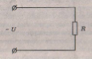 U(t) = U0sinωt
Тогда по закону Ома ток в цепи будет равен:
I(t) = U(t)/R = (U0/R)sinωt = I0sinωtТок и напряжение совпадают по фазе, а зависимости тока и напряжения от времени (временная диаграмма).
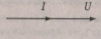35 Электрическая цепь с катушкой индуктивности (идеальной).
В тетради: "Электрическая цепь: с активным сопротивлением; с катушкой индуктивности (идеальной); с емкостью"Рассмотрим цепь, в которой к катушке индуктивности L, не обладающей активным сопротивлением (R = 0), приложено синусоидальное напряжение.
Протекающий через катушку переменный ток создает в ней ЭДС самоиндукции eL, которая в соответствии с правилом Ленца направлена таким образом, что препятствует изменению тока. Другими словами, ЭДС самоиндукции направлена навстречу приложенному напряжению. Тогда в соответствии со вторым правилом Кирхгофа можно записать:
U + eL = 0.Согласно закону Фарадея ЭДС самоиндукции
eL = -L(dl/dt)
Подставив одно в другое, получим:
dl/dt = -(eL/L) = U/L = (U0/L) sinωt
Решение этого дифференциального уравнения имеет вид:
I = I0sin(ωt-П/2), где I0 = U0/ωL
Деля обе части равенства на √2, получим для действующих значений
I = U/ωL = U/xL
Соотношение представляет собой з-н Ома для цепи с идеальной индуктивностьЮ, а величина xL = ωL наз. индуктивным сопротивлением изм. [Ом].
Мгновенная мощносчть в цепи с чисто индуктивным сопротивлением равна:
p(t) = I0U0sinωtsin(ω-(П/2)) = -((I0U0)/2) sin2ωt."+" значения мощности соответствуют потреблению энергии катушкой, а "-" - возврату запасенной энергии обратно источнику. Средняя за период мощность = 0. Следовательно, цепь с индуктивностью мощности не потребляет - это чисто реактивная нагрузка. В этой цепи происходит лишь перекачивание электрической энергии от источника в катушку и обратно. Индуктивное сопротивление является реактивным сопротивлением.
36 Электрическая цепь с емкостью.
В тетради: "Электрическая цепь: с активным сопротивлением; с катушкой индуктивности (идеальной); с емкостью"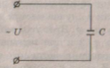
Рассмотрим электрическую цепь, в которой переменное напряжение приложено к емкости С.
Мгновенное значение тока в цепи с емкостью равно скорости изменения заряда на обкладках конденсатора:
I = dq/dt, но поскольку q = CU, то:I = C(dU/dt) = ωCU0cosωt = I0sin(ωt+П/2), где ωCU0 = I0.
Мы видим, что в этой цепи ток опережает напряжение на 2. Переходя в формуле ωCU0 = I0.
(I = I0/√2, U = U0/√2), получим: I = U/xc.
Это закон Ома для цепи переменного тока с емкостью, а величина xc = 1/ωC
- называется емкостным сопротивлением. Векторная диаграмма для этой цепи показана на рисунке ниже слева, а временная - справа. 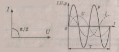Мгновенная мощность в цепи, содержащей емкость:
p(t) = I0U0sin(ωt+(П/2))sinωt = IUsin2ωt
Мы видим, что мгновенная мощность изменяется с удвоенной частотой. При этом "+" значения мощности соответствуют заряду конденсатора, а "-" - его разряду и возврату запасаённой энергии в источник. Средняя за период мощность здесь = 0, поскольку в цепи с конденсатором активная мощность не потребляется, а происходит обмен электрической энергией между конденсатором и источником. Следовательно, конденсатор так же, как и индуктивность, является реактивным сопротивлением.
37 Неразветвленные и разветвленные цепи переменного тока.
В тетради: лекция 19 "Неразветвлённые и разветвлённые цепи переменного тока"Неразветвлённая цепь
Одинаковой на всех участках цепи является величина тока, вектор которого задается при построении диаграмм. Все остальные векторные (напряжения) и скалярные величины (сопротивления и мощности) откладываются со сдвигом относительного тока.
Величины, характеризующие участки цепи и цепь в целом (сопротивления, напряжения и мощности) связаны между собой как стороны прямоугольного треугольника (с помощью теоремы Пифагора и тригонометрических функций).
Угол сдвига фаз между напряжением и током, (φ — это угол в прямоугольном треугольнике между активной составляющей величины и ее полным значением (сопротивления, напряжения, мощность) можно определить с помощью cosφ, sinφ, tgφ. Косинус угла сдвига фаз — cos φ — или коэффициент мощности — это отношение активной составляющей величины к полной. Синус угла сдвига фаз— sin φ — это отношение реактивной составляющей величины к ее полному значению.
Индуктивные и емкостные составляющие сопротивления, напряжения и мощности находятся в противофазе друг к другу, поэтому при геометрическом сложении их результирующее реактивное сопротивление, напряжение и мощность могут быть положительными, отрицательными и равными нулю Х = ХL — ХC, Up = UL - UC, Q = QL - QC.
Разветвлённая цепьВ цепях параллельного соединенияr, L и С одинаковым на всех участках является напряжение. Относительно вектора напряжений со сдвигом откладываются величины составляющих токов, проводимостей и мощностей, которые откладываются геометрически для нахождения полной величины.
Активная, индуктивная и емкостная проводимость ветви, определяется отношением соответствующего сопротивления ветви к квадрату полного сопротивления этой же ветви:
g=R/Z2; bL=XL/Z2; bC = XC/Z2.
Активная, индуктивная и емкостная составляющие тока ветвей определяются как: Ia = Ug; IL = UbL; IC = Ubc.
Необходимо помнить, что составляющие величин — токов, проводимостей, мощностей связаны с полной величиной тока, проводимости, мощности как стороны соответствующего прямоугольного треугольника (по теореме Пифагора и с помощью тригонометрических функций).
Резонанс токов — режим, имеющий особое практическое значение. Рассмотреть особен-ности этого режима: минимальный ток, cosφ = 1, отсутствие потерь.
38 Коэффициент мощности.
В тетради: лекция 21 "Коэффициент мощности"Коэффициентом мощности cosφ называют отношение активной мощности потребителя к полной мощности.
Каждый потребитель электрической энергии характеризуется номинальным током и напряжением и номинальной полной мощностью, равными произведению номинального напряжения на номинальный ток Для трёхфазной системы ~I:
Sн = √3 * Uн * Iн.
Наилучшее использование мощности генератора будет при его работе с номинальными значениями тока и напряжения и при cosφ ≈ 1. В этом случае активная мощность генератора будет равна его полной мощности:
Pн = √3 * Uн * Iн * cosφ = √3 * Uн * Iн = Sн.При номинальных значениях тока и напряжения и изменяющемся cosφ мощность генератора будет прямо пропорциональна последнему, а уменьшение cosφ приведет к неполному использованию его мощности.
С другой стороны, если приемник электрической энергии работает с постоянной актив-ной мощностью при неизменном напряжении, но при различных cosφ, то его ток изменяется обратно пропорционально cosφ.
Таким образом, с уменьшением cosφ ток приемника и питающей его сети увеличивается, что приводит к дополнительным потерям электрической энергии в линиях электропередачи.
I = P/√3U * cosφВ настоящее время приняты следующие нормативные значения коэффициента мощности:
0,85 - при питании потребителей от генераторов электростанций на генераторном напряжении;
0,93 — при питании потребителей от районных сетей напряжением 110, 220кВ и от сетей 35кВ, питающихся от электростанций через две ступени трансформации;
0,95 — при питании потребителей от сетей напряжением 35кВ, питающихся от районных электросетей через три ступени трансформации.
39 Трехфазные электрические цепи.
В тетради: лекция 22 "Трехфазные электрические цепи"Трехфазная цепь это совокупность трех электрических цепей, в которых действуют синусоидальные ЭДС, одинаковые по амплитуде и частоте, сдвинутые по фазе одна от другой на угол 2π/3 = 120° и создаваемые общим источником энергии.
Каждую отдельную цепь, входящую в трехфазную цепь принято называть фазой. Таким образом, термин "фаза" имеет в электротехнике два значения: первое – аргумент синусои-дально изменяющейся величины, второе – часть многофазной системы электрических цепей. Трехфазная цепь является частным случаем многофазных систем переменного тока. Широкое распространение трехфазных цепей объясняется рядом их преимуществ по сравнению как с однофазными, так и с другими многофазными цепями:
• экономичность производства и передачи энергии по сравнению с однофазными цепя-ми;• возможность сравнительно простого получения кругового вращающегося магнитного поля, необходимого для трехфазного асинхронного двигателя;
• возможность получения в одной установке двух эксплуатационных напряжений – фазного и линейного.
Каждая фаза трехфазной цепи имеет стандартное наименование:
первая фаза – фаза "А";
вторая фаза – фаза "В";
третья фаза – фаза "С".
Начала и концы каждой фазы также имеют стандартные обозначения. Начала первой, второй и третьей фаз обозначаются соответственно А, В, С, а концы фаз – X, Y, Z.
Основными элементами трехфазной цепи являются: трехфазный генератор, преобразу-ющий механическую энергию в электрическую; линии электропередач; приемники (потребители), которые могут быть как трехфазными (например, трехфазные асинхронные двигатели), так и однофазными (например, лампы накаливания).
40 Получение трехфазной системы ЭДС.
Трехфазный генератор создает одновременно три ЭДС, одинаковые по величине и отличающиеся по фазе на 1200. Получение трехфазной системы ЭДС основано на принципе электромагнитной индукции, используемом в трехфазном генераторе. Трехфазный генератор представляет собой синхронную электрическую машину
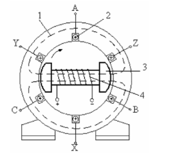41-42
41 Способы соединения фаз в трехфазной цепи.
Существуют различные способы соединения фаз трехфазных источников и трех-фазных потребителей электроэнергии. Наиболее распространенными являются соединения "звезда" и "треугольник". При этом способ соединения фаз источни-ков и фаз потребителей в трехфазных системах могут быть различными. Фазы ис-точника обычно соединены "звездой", фазы потребителей соединяются либо "звездой", либо "треугольником".
При соединении фаз обмотки генератора (или трансформатора) "звездой" их концы соединяют в одну общую точку, называемую нейтралью. Концы фаз при-емников также соединяют в одну точку. Такое соединение называется соедине-ние "звезда"
При соединении фаз трехфазного источника питания треугольником конец одной фазы соединяется с началом второй фазы, конец второй фазы – с началом третьей фазы, конец третьей фазы – c началом первой фазы. Начала фаз подключаются с помощью трех проводов к трем фазам приемника, также соединенным способом "треугольник".
42 Мощность трехфазной цепи.
В трёхфазных цепях, так же, как и в ондофазных, пользуются понятиями активной, реактивной и полной мощностей.
P = Pa + Pb + Pc = UaIacosφb + UbIbcosφb + UcIccosφcРеактивная мощность соответственно равна алгебраической сумме реактивных мощностей отдельных фаз.
Q = Qa+Qb + Qc = UaIasinφb + UbIbsinφb + UcIcsinφcПри соединении фаз приёмников в треугольник в выражения фазных мощностей надо подставлять соответствующие фазные величины, например:
Pab = UabIabcosφabПолная мощность отдельных фаз:
Sa = UaIa; Sb = UbIb; Sc = UcIc
Полная мощность трёхфазного приёмника: S = √(P2 + Q2)
В симметричном приёмнике: P = 3Pφ = 3UφIφcosφ; Q = 3Qφ = 3Uφiφsinφ.